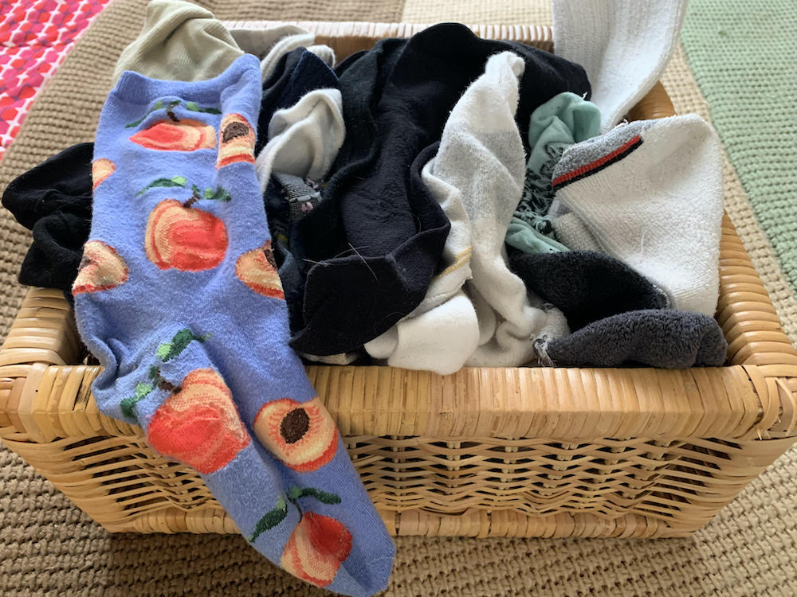
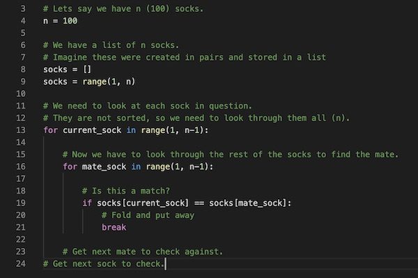

The Value of Keeping the Sample Size Small
Have you ever read an article that you feel is somehow important? It sticks with you waiting for
an opportune chance to seek further elaboration. Well, this is one such article on the mundane subject
of sorting socks.
Several years ago, I read this article (see link below) in the "Daily Mail." It has been bouncing around inside of
me for all of that time. How to most efficiently sort socks using
science. However, in reading it, I realize the implications are actually much larger and help to
explain the underlying WHY , in delivering modern software we seek to keep the
feature set (sample size) small.
Lets talk about socks, first, since it is the simpler case:
"Many people match freshly laundered socks by finding one and then searching for its partner.
But with every extra pair of socks added to the wash, the more time consuming this task is.
Experts claim finding two pairs takes four times as long as matching one pair,
while it is 25 times longer with five pairs and 10,000 times longer with 100 pairs."
Anyone who writes software understands the underlying complexity of it and how one bit out of place can take an entire system down. I am sure that even non-technical people can imagine that.
Yesterday, I was working with a buddy on his Python nano-degree and he was repeatedly challenged by the use of whitespace. A missing tab or an extra space can blow up an entire Python program. However, it is not always clear where the defective bit of code is (whitespace is particularly elusive because it is invisible being a tab, a space, or a return character). The larger the amount of code is written, the more chances the programmer has had to introduce a defect and the more code (socks) that will have to be scanned to find the defect. Yes, logs and compilers are tremendous help to an engineer, however, many times the most insideous defects are the most subtle ones. Flushing them out and squashing them can be an extremely time-consuming chore.
I will use software code to explain the problem using Python which is one of the most friendly computer languages:

This program doesn't actually do anything or print anything. However, it illustrates the idea that we have two loops for each sock, one to find the first sock, then the second to find the matching one. Since the socks are unsorted, the problem is that we may have to look through the entire stack twice to find both socks.
This is known in software engineering circles as an O(n^2) problem. Also called "quadratic time," i.e. the amount of time increases exponentially as the number of socks (or code size) increases.
Now one might say that we can decrease the time searching for each mate by (as I have done in the Python code) breaking off the search after finding the mate. One might also say that we have two fewer socks to search through every time we successfully find a mate, fold, and put the pair away. However, the pathological case or worst case would say that the sock we are looking for might be the one on the bottom of the pile, so O(n^2) stands even with certain shortcuts that we might take to save some time.
IN SHORT:
The more socks you have in your batch to sort, the longer it will take. The increase in time will not be linear; it will take exponentially longer to find its mate. Likewise, the difficulty of finding subtle defects will increase exponentially with the amount of code deployed.
May your holidays be bright...and your batches small...
Link To Original Article in the Daily Mail